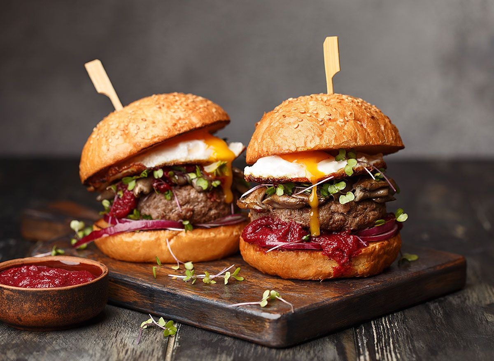
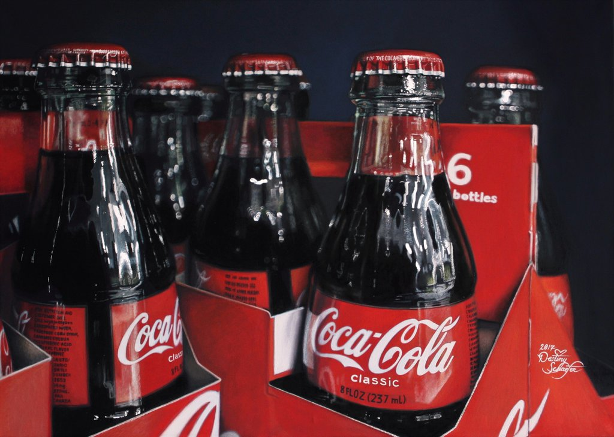
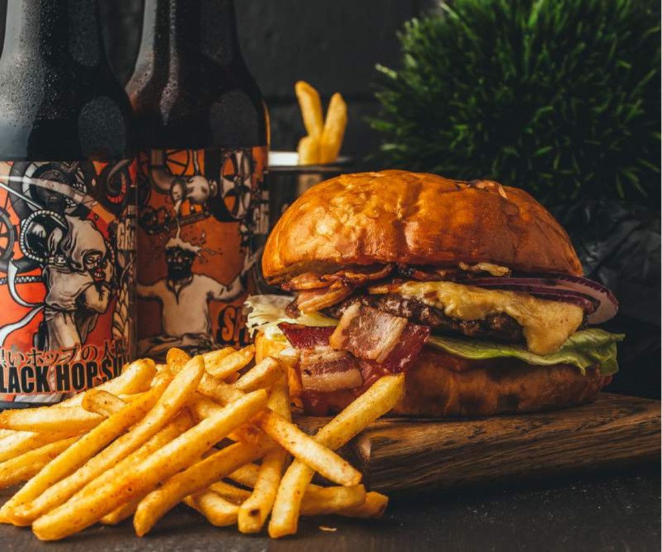
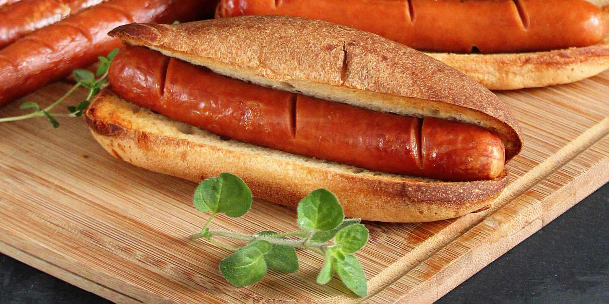
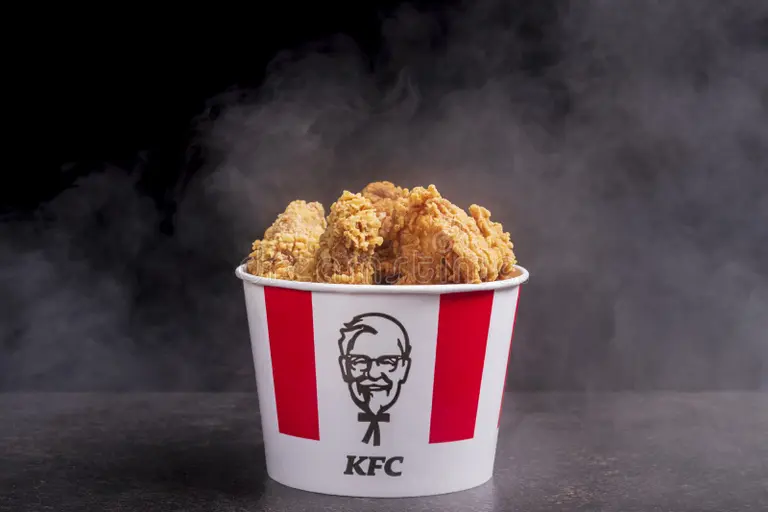
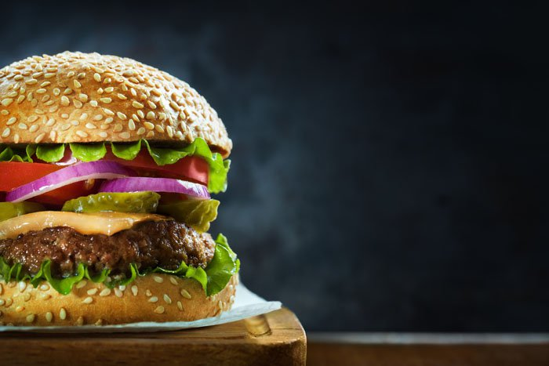

.jpg)
Uzbek Language: Fast tamaddi qilishga mo'ljallangan ommaviy ishlab chiqarilgan oziq-ovqat turi qayta sotish, xizmat ko'rsatish tezligiga ustuvor ahamiyat beriladi. Bu tijorat muddati, restoran yoki do'konda sotiladigan oziq-ovqat bilan cheklangan muzlatilgan, oldindan qizdirilgan yoki oldindan pishirilgan ingredientlar va qadoqlashda xizmat qiladi olib ketish / olib ketish. Fast tamaddi qilishga tijorat strategiyasi sifatida yaratilgan ko'p sonli band yo'lovchilar, sayohatchilar va ish haqini joylashtiring ishchilar. 2018 yilda tez ovqatlanish sanoati taxminan 570 dollarga teng edi milliard global.
Russian Language: Фаст-фуд - это вид продуктов массового производства, предназначенных для коммерческой перепродажи, при этом большое значение придается скорости обслуживания. Это коммерческий термин, применяемый только к продуктам питания, которые продаются в ресторанах или магазинах с замороженными, предварительно разогретыми или полуфабрикатными ингредиентами и подаются в упаковке на вынос. Фаст-фуд был создан как коммерческая стратегия для обслуживания большого числа занятых пассажиров пригородных поездов, путешественников и наемных работников. 2018 году мировой оборот индустрии быстрого питания оценивался в 570 миллиардов долларов

Uzbek Language: A gamburger, shuningdek, a burger, plombalardan tashkil topgan taom—odatda ning maydalangan go'sht, odatda mol go'shti—dilimlangan bulochka yoki non rulosiga joylashtirilgan. Pattilarga ko'pincha pishloq, salat, pomidor, piyoz, tuzlangan bodring, Bekon yoki chili ketchup, xantal, mayonez, lazzat yoki "maxsus sous" kabi ziravorlar qo'shiladi, ko'pincha ularning o'zgarishi
Russian Language: А гамбургер, также известный как гамбургер, это блюдо, состоящее из начинок—обычно пирожок из фарш, обычно говядина—помещенный на нарезанную булочку или булочку. В котлеты часто добавляют такие специи, как сыр, салат, помидоры, лук, соленые огурцы, бекон или кетчуп с чили, горчицу, майонез, ароматизаторы или "особый соус", часто с вариациями

Uzbek Language: Coca-Cola yoki Coke-Coca-Cola kompaniyasi kompaniyasi tomonidan chiqadigan alkogolsiz gazli ichimlik[1] [2]. "Coca-Cola" 2005-2011-yillar oraligidabrend xalq tekshirish agentligi reyting bo'yicha dunyo bo'yicha eng qimmat brend deb topilgan. Burgundy kunda bu ichimlik dunyosidagi 200 dan ortiq mamlakatlarda sotiladi [3].
Russian Language: Coca-Cola или Coke-безалкогольный газированный напиток, выпускаемый компанией Coca-Cola Company[1] [2]. "Coca-Cola" в период с 2005 по 2011 год являлась брендом, который Агентство народной инспекции назвало самым дорогим брендом в мире по рейтингу. Бургундский день этот напиток продается более чем в 200 странах мира [3].

Uzbek Language: Ko'pgina tez ovqatlar odatda to'yingan yog'lar, shakar, tuz va kaloriyalarga ega. Fast-fud iste'mol qilish yurak-qon tomir kasalliklari, yo'g'on ichak saratoni, semizlik, yuqori xolesterin, insulin qarshiligi va depressiya xavfining oshishi bilan bog'liq. Bu korrelyatsiyalar hatto chalkash turmush tarzi o'zgaruvchilarini nazorat qilganda ham kuchli bo'lib qoladi.
Russian Language: Большинство фаст-фудов обычно содержат большое количество насыщенных жиров, сахара, соли и имеет калории. Употребление фаст-фуда вредно для сердечно-сосудистой системы заболевания, рак толстой кишки, ожирение, высокий уровень холестерина, связано с повышенным риском резистентности к инсулину и депрессии. Этот корреляции даже смешивают переменные образа жизни остается мощным, даже когда его контролируют.

Uzbek Language: Pizza (italyancha: pizza) - an'anaviy italyan taomi bo'lib, dastlab pomidor sousi, pishloq va ko'pincha go'sht, sabzavotlar, qo'ziqorinlar va boshqa mahsulotlar kabi boshqa ingredientlar bilan pishirilgan dumaloq xamirturushli yassi non shaklida. Kichkina pitsa ba'zan pizzetta deb ataladi
Russian Language: Пи́цца (итал. pizza) — традиционное итальянское блюдо, изначально в виде круглой дрожжевой лепёшки, выпекаемой с уложенной сверху начинкой из томатного соуса, сыра и зачастую других ингредиентов, таких как мясо, овощи, грибы и прочие продукты. Небольшую пиццу иногда называют пиццеттой.

Uzbek Language: hot-dog (inglizcha hot-dog, so'zma-so'z "hot-dog") - qovurilgan yoki bug'da pishirilgan kolbasadan iborat, kesilgan bulochkada beriladigan taom. "Xot-dog" so'zi kolbasaning o'ziga ham tegishli bo'lishi mumkin. Vena kolbasa yoki Frankfurter ishlatiladi. Ushbu kolbasalarning nomlari odatda idishga tegishli
Russian Language: от-дог (англ. hot-dog, букв. «горячая собака») — это блюдо, состоящее из жареной или приготовленной на пару сосиски, подаваемой в разрезе булочки. Слово «хот-дог» также может относиться и к самой сосиске. Используется венская сосиска или франкфуртер. Названия этих сосисок также обычно относятся к блюду

Uzbek Language: Chicken, qisqartirilgan KFC, tovuqli taomlarga ixtisoslashgan xalqaro oziq-ovqat servisi restoranlar tarmog'idir. Kompaniyaning bosh qarorgohi Kentukki shtatining Luisvill shahrida joylashgan. KFC savdo hajmi bo'yicha dunyodagi ikkinchi yirik kafe tarmog'i bo'lib, McDonald'sdan keyin ikkinchi o'rinda turadi. 2019-yil holatiga ko‘ra, KFC brendi ostida 820 ming kishi ishlagan
Russian Language «Жареная курочка из Кентукки»), сокращённо KFC — международная сеть ресторанов общественного питания, специализирующаяся на блюдах из курятины. Штаб-квартира компании располагается в городе Луисвилле в штате Кентукки. KFC — вторая по торговому обороту сеть кафе в мире, уступающая лишь компании McDonald's. По состоянию на 2019 год под брендом KFC работали 820 тысяч

Uzbek Language Cheeseburger (inglizcha cheeseburger, pishloq — pishloq) — pishloqli gamburger. An'anaga ko'ra, go'shtli patti ustiga bir tilim pishloq qo'yiladi. Pishloq odatda pishirish gamburgeriga xizmat qilishdan oldin qisqa vaqt ichida qo'shiladi, bu pishloqning erishiga imkon beradi. Chizburgerlar tarkibi, tarkibi va tarkibidagi o'zgarishlarni o'z ichiga olishi mumkin.
Russian Language Чи́збургер (англ. cheeseburger, от cheese — сыр) — это гамбургер с сыром. Традиционно ломтик сыра кладется поверх мясной котлеты. Сыр обычно добавляют в готовящийся гамбургер незадолго до подачи на стол, что позволяет сыру расплавиться. Чизбургеры могут включать вариации структуры, ингредиентов и состава.